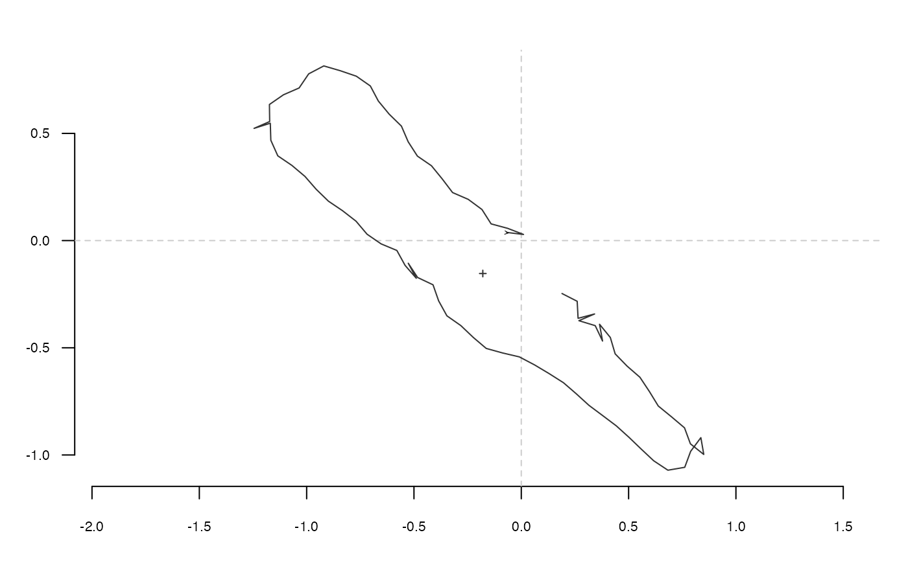

tfourier_shape calculates a 'Fourier tangent angle shape' given
Fourier coefficients (see Details) or can generate some 'tfourier'
shapes.
tfourier_shape(an, bn, ao = 0, nb.h, nb.pts = 80, alpha = 2, plot = TRUE)
Arguments
| an |
|
|---|---|
| bn |
|
| ao |
|
| nb.h |
|
| nb.pts |
|
| alpha |
|
| plot |
|
Value
A matrix of (x; y) coordinates.
References
Claude, J. (2008) Morphometrics with R, Use R! series, Springer 316 pp.
See also
Other tfourier: tfourier_i,
tfourier
Examples
#> x y #> [1,] -0.068536123 0.03816985 #> [2,] 0.010421770 0.02861438 #> [3,] -0.063790622 0.05721817 #> [4,] -0.140579972 0.07793172 #> [5,] -0.183238239 0.14505793 #> [6,] -0.247181702 0.19235370 #> [7,] -0.320133871 0.22403393 #> [8,] -0.368197883 0.28740195 #> [9,] -0.418456077 0.34904422 #> [10,] -0.483991433 0.39410832 #> [11,] -0.527015593 0.46100060 #> [12,] -0.558482563 0.53404501 #> [13,] -0.615378810 0.58961904 #> [14,] -0.666002527 0.65096148 #> [15,] -0.703250243 0.72123426 #> [16,] -0.768466384 0.76675910 #> [17,] -0.843721723 0.79249409 #> [18,] -0.920086430 0.81472216 #> [19,] -0.990492372 0.77772677 #> [20,] -1.035089701 0.71187289 #> [21,] -1.107991534 0.68007700 #> [22,] -1.173409209 0.63484224 #> [23,] -1.172271234 0.55531639 #> [24,] -1.245117865 0.52339423 #> [25,] -1.169306190 0.54744097 #> [26,] -1.166890972 0.46794366 #> [27,] -1.134401707 0.39534818 #> [28,] -1.068636587 0.35062006 #> [29,] -1.007856315 0.29932275 #> [30,] -0.955597746 0.23936695 #> [31,] -0.898595892 0.18390125 #> [32,] -0.832707879 0.13935435 #> [33,] -0.769939719 0.09050956 #> [34,] -0.718591641 0.02977217 #> [35,] -0.653105984 -0.01536412 #> [36,] -0.579711689 -0.04600613 #> [37,] -0.541356302 -0.11568052 #> [38,] -0.489158357 -0.17568911 #> [39,] -0.526675851 -0.10555999 #> [40,] -0.483094002 -0.17209027 #> [41,] -0.411233403 -0.20617413 #> [42,] -0.384991638 -0.28125426 #> [43,] -0.346581120 -0.35089827 #> [44,] -0.281483742 -0.39659277 #> [45,] -0.223918101 -0.45147312 #> [46,] -0.163346561 -0.50301673 #> [47,] -0.086698985 -0.52424890 #> [48,] -0.009264515 -0.54240265 #> [49,] 0.061119622 -0.57943951 #> [50,] 0.129392040 -0.62023819 #> [51,] 0.196505793 -0.66291605 #> [52,] 0.256624481 -0.71498715 #> [53,] 0.315395180 -0.76857503 #> [54,] 0.379092808 -0.81620137 #> [55,] 0.442596932 -0.86408541 #> [56,] 0.501564226 -0.91745689 #> [57,] 0.558878373 -0.97259983 #> [58,] 0.616862632 -1.02703770 #> [59,] 0.683127662 -1.07102180 #> [60,] 0.761505112 -1.05750770 #> [61,] 0.789105491 -0.98291631 #> [62,] 0.836639557 -0.91914980 #> [63,] 0.850183366 -0.99752212 #> [64,] 0.787935223 -0.94801632 #> [65,] 0.760460379 -0.87337860 #> [66,] 0.699791505 -0.82194959 #> [67,] 0.638226839 -0.77159636 #> [68,] 0.596708767 -0.70375901 #> [69,] 0.552733618 -0.63748804 #> [70,] 0.492705339 -0.58531274 #> [71,] 0.437325328 -0.52822763 #> [72,] 0.414799359 -0.45195026 #> [73,] 0.364582422 -0.39027438 #> [74,] 0.378601540 -0.46856307 #> [75,] 0.344461362 -0.39672921 #> [76,] 0.268368346 -0.37358815 #> [77,] 0.341471182 -0.34225716 #> [78,] 0.264568188 -0.36254472 #> [79,] 0.260420375 -0.28311896 #> [80,] 0.189614910 -0.24689408tfourier_shape()#> x y #> [1,] 0.040114265 -0.059917013 #> [2,] 0.088007744 -0.123414024 #> [3,] 0.141751425 -0.182042281 #> [4,] 0.201184395 -0.234894697 #> [5,] 0.265971899 -0.281027495 #> [6,] 0.335586881 -0.319490595 #> [7,] 0.409297144 -0.349364545 #> [8,] 0.486160168 -0.369803021 #> [9,] 0.565027499 -0.380079198 #> [10,] 0.644560243 -0.379633690 #> [11,] 0.723256604 -0.368121152 #> [12,] 0.799491613 -0.345452248 #> [13,] 0.871568198 -0.311827531 #> [14,] 0.937777727 -0.267759923 #> [15,] 0.996467100 -0.214082989 #> [16,] 1.046108633 -0.151943035 #> [17,] 1.085368331 -0.082774170 #> [18,] 1.113167942 -0.008256807 #> [19,] 1.128736354 0.069738579 #> [20,] 1.131646540 0.149219310 #> [21,] 1.121835272 0.228145825 #> [22,] 1.099604142 0.304509643 #> [23,] 1.065601905 0.376408903 #> [24,] 1.020789607 0.442116693 #> [25,] 0.966391274 0.500138044 #> [26,] 0.903833924 0.549252539 #> [27,] 0.834681243 0.588540737 #> [28,] 0.760565477 0.617393971 #> [29,] 0.683121788 0.635508352 #> [30,] 0.603928752 0.642864892 #> [31,] 0.524457817 0.639698458 #> [32,] 0.446033553 0.626458722 #> [33,] 0.369805497 0.603766448 #> [34,] 0.296731510 0.572368229 #> [35,] 0.227571760 0.533092477 #> [36,] 0.162891912 0.486808861 #> [37,] 0.103073752 0.434392800 #> [38,] 0.048331316 0.376695994 #> [39,] -0.001269327 0.314523395 #> [40,] -0.045788352 0.248616551 #> [41,] -0.085389959 0.179642872 #> [42,] -0.120320777 0.108190134 #> [43,] -0.150889727 0.034765376 #> [44,] -0.177449866 -0.040202716 #> [45,] -0.200382470 -0.116358815 #> [46,] -0.220083441 -0.193414168 #> [47,] -0.236951925 -0.271138746 #> [48,] -0.251380965 -0.349352930 #> [49,] -0.263749928 -0.427919237 #> [50,] -0.274418431 -0.506734456 #> [51,] -0.283721503 -0.585722484 #> [52,] -0.291965725 -0.664828038 #> [53,] -0.299426164 -0.744011354 #> [54,] -0.306343911 -0.823243927 #> [55,] -0.312924120 -0.902505245 #> [56,] -0.319334452 -0.981780483 #> [57,] -0.325703865 -1.061059020 #> [58,] -0.332121736 -1.140333648 #> [59,] -0.338637260 -1.219600310 #> [60,] -0.345259148 -1.298858157 #> [61,] -0.351955588 -1.378109741 #> [62,] -0.358654450 -1.457361119 #> [63,] -0.365243738 -1.536621684 #> [64,] -0.371572245 -1.615903496 #> [65,] -0.377450411 -1.695219969 #> [66,] -0.382651392 -1.774583724 #> [67,] -0.386912345 -1.854003495 #> [68,] -0.389936006 -1.933479990 #> [69,] -0.391392645 -2.013000641 #> [70,] -0.390922551 -2.092533243 #> [71,] -0.388139248 -2.172018518 #> [72,] -0.382633685 -2.251361725 #> [73,] -0.373979706 -2.330423501 #> [74,] -0.361741116 -2.409010222 #> [75,] -0.345480686 -2.486864279 #> [76,] -0.324771407 -2.563654783 #> [77,] -0.299210242 -2.638969341 #> [78,] -0.268434514 -2.712307668 #> [79,] -0.232140895 -2.783077924 #> [80,] -0.190106748 -2.850596708tfourier_shape(nb.h=6, alpha=0.4, nb.pts=500)#> x y #> [1,] 0.0087461417 -0.010203218 #> [2,] 0.0168673110 -0.019825787 #> [3,] 0.0252134505 -0.029253892 #> [4,] 0.0336515014 -0.038599829 #> [5,] 0.0420519352 -0.047979591 #> [6,] 0.0502844935 -0.057507036 #> [7,] 0.0582141135 -0.067288056 #> [8,] 0.0656974943 -0.077414567 #> [9,] 0.0725807497 -0.087958192 #> [10,] 0.0786985937 -0.098963609 #> [11,] 0.0838754768 -0.110441723 #> [12,] 0.0879290397 -0.122362959 #> [13,] 0.0906761465 -0.134651190 #> [14,] 0.0919415905 -0.147178994 #> [15,] 0.0915693280 -0.159765044 #> [16,] 0.0894357974 -0.172174527 #> [17,] 0.0854645333 -0.184123430 #> [18,] 0.0796409347 -0.195287342 #> [19,] 0.0720257419 -0.205315107 #> [20,] 0.0627655723 -0.213847192 #> [21,] 0.0520988282 -0.220538066 #> [22,] 0.0403554659 -0.225081266 #> [23,] 0.0279495220 -0.227235281 #> [24,] 0.0153639274 -0.226847939 #> [25,] 0.0031279358 -0.223876788 #> [26,] -0.0082116283 -0.218403077 #> [27,] -0.0181232658 -0.210637341 #> [28,] -0.0261251439 -0.200915346 #> [29,] -0.0318178089 -0.189684105 #> [30,] -0.0349121811 -0.177478693 #> [31,] -0.0352501179 -0.164891675 #> [32,] -0.0328155482 -0.152537724 #> [33,] -0.0277351581 -0.141016575 #> [34,] -0.0202686987 -0.130877581 #> [35,] -0.0107900460 -0.122588892 #> [36,] 0.0002389712 -0.116513696 #> [37,] 0.0122993589 -0.112895095 #> [38,] 0.0248474872 -0.111850249 #> [39,] 0.0373465684 -0.113373468 #> [40,] 0.0492946815 -0.117347108 #> [41,] 0.0602475346 -0.123558568 #> [42,] 0.0698348739 -0.131721297 #> [43,] 0.0777701681 -0.141497714 #> [44,] 0.0838538444 -0.152522056 #> [45,] 0.0879708623 -0.164421526 #> [46,] 0.0900837470 -0.176834541 #> [47,] 0.0902223708 -0.189425332 #> [48,] 0.0884717813 -0.201894600 #> [49,] 0.0849592597 -0.213986309 #> [50,] 0.0798416008 -0.225490951 #> [51,] 0.0732933687 -0.236245852 #> [52,] 0.0654966368 -0.246133126 #> [53,] 0.0566324950 -0.255075957 #> [54,] 0.0468744143 -0.263033788 #> [55,] 0.0363834112 -0.269996983 #> [56,] 0.0253048495 -0.275981354 #> [57,] 0.0137666552 -0.281022911 #> [58,] 0.0018786906 -0.285173034 #> [59,] -0.0102669661 -0.288494216 #> [60,] -0.0225950757 -0.291056429 #> [61,] -0.0350458373 -0.292934131 #> [62,] -0.0475732071 -0.294203867 #> [63,] -0.0601430822 -0.294942422 #> [64,] -0.0727314549 -0.295225441 #> [65,] -0.0853226194 -0.295126437 #> [66,] -0.0979074862 -0.294716129 #> [67,] -0.1104820383 -0.294062015 #> [68,] -0.1230459499 -0.293228139 #> [69,] -0.1356013759 -0.292274984 #> [70,] -0.1481519114 -0.291259463 #> [71,] -0.1607017168 -0.290234959 #> [72,] -0.1732547977 -0.289251401 #> [73,] -0.1858144287 -0.288355358 #> [74,] -0.1983827083 -0.287590130 #> [75,] -0.2109602299 -0.286995844 #> [76,] -0.2235458563 -0.286609539 #> [77,] -0.2361365833 -0.286465250 #> [78,] -0.2487274778 -0.286594093 #> [79,] -0.2613116787 -0.287024341 #> [80,] -0.2738804462 -0.287781513 #> [81,] -0.2864232482 -0.288888466 #> [82,] -0.2989278720 -0.290365492 #> [83,] -0.3113805510 -0.292230435 #> [84,] -0.3237660962 -0.294498803 #> [85,] -0.3360680248 -0.297183906 #> [86,] -0.3482686792 -0.300296985 #> [87,] -0.3603493290 -0.303847354 #> [88,] -0.3722902533 -0.307842545 #> [89,] -0.3840707993 -0.312288438 #> [90,] -0.3956694154 -0.317189390 #> [91,] -0.4070636589 -0.322548349 #> [92,] -0.4182301783 -0.328366946 #> [93,] -0.4291446731 -0.334645563 #> [94,] -0.4397818327 -0.341383371 #> [95,] -0.4501152596 -0.348578335 #> [96,] -0.4601173815 -0.356227177 #> [97,] -0.4697593578 -0.364325295 #> [98,] -0.4790109877 -0.372866640 #> [99,] -0.4878406271 -0.381843538 #> [100,] -0.4962151238 -0.391246465 #> [101,] -0.5040997790 -0.401063768 #> [102,] -0.5114583468 -0.411281336 #> [103,] -0.5182530817 -0.421882223 #> [104,] -0.5244448465 -0.432846222 #> [105,] -0.5299932924 -0.444149406 #> [106,] -0.5348571237 -0.455763637 #> [107,] -0.5389944597 -0.467656058 #> [108,] -0.5423633049 -0.479788581 #> [109,] -0.5449221373 -0.492117393 #> [110,] -0.5466306236 -0.504592500 #> [111,] -0.5474504642 -0.517157335 #> [112,] -0.5473463703 -0.529748459 #> [113,] -0.5462871663 -0.542295383 #> [114,] -0.5442470068 -0.554720558 #> [115,] -0.5412066883 -0.566939547 #> [116,] -0.5371550278 -0.578861429 #> [117,] -0.5320902713 -0.590389459 #> [118,] -0.5260214853 -0.601422004 #> [119,] -0.5189698775 -0.611853785 #> [120,] -0.5109699825 -0.621577411 #> [121,] -0.5020706453 -0.630485218 #> [122,] -0.4923357319 -0.638471374 #> [123,] -0.4818444968 -0.645434219 #> [124,] -0.4706915430 -0.651278776 #> [125,] -0.4589863210 -0.655919359 #> [126,] -0.4468521276 -0.659282181 #> [127,] -0.4344245852 -0.661307870 #> [128,] -0.4218496078 -0.661953756 #> [129,] -0.4092808851 -0.661195841 #> [130,] -0.3968769450 -0.659030317 #> [131,] -0.3847978825 -0.655474550 #> [132,] -0.3732018674 -0.650567447 #> [133,] -0.3622415627 -0.644369146 #> [134,] -0.3520605987 -0.636960016 #> [135,] -0.3427902523 -0.628438989 #> [136,] -0.3345464751 -0.618921250 #> [137,] -0.3274274009 -0.608535394 #> [138,] -0.3215114399 -0.597420151 #> [139,] -0.3168560363 -0.585720815 #> [140,] -0.3134971310 -0.573585537 #> [141,] -0.3114493345 -0.561161618 #> [142,] -0.3107067769 -0.548591979 #> [143,] -0.3112445692 -0.536011915 #> [144,] -0.3130207801 -0.523546271 #> [145,] -0.3159788137 -0.511307101 #> [146,] -0.3200500585 -0.499391893 #> [147,] -0.3251566757 -0.487882345 #> [148,] -0.3312143995 -0.476843722 #> [149,] -0.3381352306 -0.466324724 #> [150,] -0.3458299246 -0.456357833 #> [151,] -0.3542101963 -0.446960053 #> [152,] -0.3631905805 -0.438133960 #> [153,] -0.3726899188 -0.429868985 #> [154,] -0.3826324557 -0.422142849 #> [155,] -0.3929485518 -0.414923058 #> [156,] -0.4035750335 -0.408168421 #> [157,] -0.4144552121 -0.401830524 #> [158,] -0.4255386131 -0.395855121 #> [159,] -0.4367804613 -0.390183430 #> [160,] -0.4481409698 -0.384753322 #> [161,] -0.4595844819 -0.379500394 #> [162,] -0.4710785124 -0.374358946 #> [163,] -0.4825927339 -0.369262876 #> [164,] -0.4940979511 -0.364146510 #> [165,] -0.5055651025 -0.358945388 #> [166,] -0.5169643269 -0.353597033 #> [167,] -0.5282641301 -0.348041705 #> [168,] -0.5394306818 -0.342223170 #> [169,] -0.5504272729 -0.336089475 #> [170,] -0.5612139558 -0.329593730 #> [171,] -0.5717473888 -0.322694889 #> [172,] -0.5819808975 -0.315358505 #> [173,] -0.5918647589 -0.307557447 #> [174,] -0.6013467067 -0.299272528 #> [175,] -0.6103726468 -0.290493027 #> [176,] -0.6188875597 -0.281217064 #> [177,] -0.6268365605 -0.271451789 #> [178,] -0.6341660742 -0.261213358 #> [179,] -0.6408250788 -0.250526690 #> [180,] -0.6467663624 -0.239424962 #> [181,] -0.6519477368 -0.227948874 #> [182,] -0.6563331524 -0.216145681 #> [183,] -0.6598936619 -0.204068016 #> [184,] -0.6626081882 -0.191772547 #> [185,] -0.6644640610 -0.179318513 #> [186,] -0.6654573009 -0.166766194 #> [187,] -0.6655926420 -0.154175368 #> [188,] -0.6648832983 -0.141603810 #> [189,] -0.6633504933 -0.129105901 #> [190,] -0.6610227838 -0.116731371 #> [191,] -0.6579352165 -0.104524236 #> [192,] -0.6541283655 -0.092521940 #> [193,] -0.6496473000 -0.080754728 #> [194,] -0.6445405306 -0.069245248 #> [195,] -0.6388589833 -0.058008378 #> [196,] -0.6326550401 -0.047051265 #> [197,] -0.6259816840 -0.036373553 #> [198,] -0.6188917704 -0.025967768 #> [199,] -0.6114374465 -0.015819848 #> [200,] -0.6036697240 -0.005909767 #> [201,] -0.5956382067 0.003787756 #> [202,] -0.5873909667 0.013302495 #> [203,] -0.5789745543 0.022667922 #> [204,] -0.5704341244 0.031920397 #> [205,] -0.5618136571 0.041098347 #> [206,] -0.5531562484 0.050241459 #> [207,] -0.5445044434 0.059389874 #> [208,] -0.5359005882 0.068583399 #> [209,] -0.5273871713 0.077860734 #> [210,] -0.5190071325 0.087258722 #> [211,] -0.5108041147 0.096811613 #> [212,] -0.5028226391 0.106550364 #> [213,] -0.4951081871 0.116501970 #> [214,] -0.4877071764 0.126688837 #> [215,] -0.4806668223 0.137128216 #> [216,] -0.4740348820 0.147831702 #> [217,] -0.4678592834 0.158804814 #> [218,] -0.4621876472 0.170046690 #> [219,] -0.4570667143 0.181549875 #> [220,] -0.4525416973 0.193300256 #> [221,] -0.4486555797 0.205277122 #> [222,] -0.4454483881 0.217453375 #> [223,] -0.4429564659 0.229795885 #> [224,] -0.4412117792 0.242265981 #> [225,] -0.4402412821 0.254820078 #> [226,] -0.4400663702 0.267410417 #> [227,] -0.4407024426 0.279985895 #> [228,] -0.4421585942 0.292492967 #> [229,] -0.4444374469 0.304876587 #> [230,] -0.4475351293 0.317081160 #> [231,] -0.4514414009 0.329051467 #> [232,] -0.4561399171 0.340733555 #> [233,] -0.4616086191 0.352075536 #> [234,] -0.4678202329 0.363028301 #> [235,] -0.4747428553 0.373546121 #> [236,] -0.4823406026 0.383587110 #> [237,] -0.4905742977 0.393113572 #> [238,] -0.4994021695 0.402092208 #> [239,] -0.5087805421 0.410494193 #> [240,] -0.5186644925 0.418295139 #> [241,] -0.5290084568 0.425474946 #> [242,] -0.5397667728 0.432017565 #> [243,] -0.5508941450 0.437910680 #> [244,] -0.5623460265 0.443145338 #> [245,] -0.5740789124 0.447715525 #> [246,] -0.5860505442 0.451617737 #> [247,] -0.5982200274 0.454850523 #> [248,] -0.6105478646 0.457414047 #> [249,] -0.6229959105 0.459309667 #> [250,] -0.6355272564 0.460539544 #> [251,] -0.6481060491 0.461106287 #> [252,] -0.6606972548 0.461012664 #> [253,] -0.6732663739 0.460261352 #> [254,] -0.6857791170 0.458854766 #> [255,] -0.6982010485 0.456794949 #> [256,] -0.7104972077 0.454083549 #> [257,] -0.7226317162 0.450721863 #> [258,] -0.7345673793 0.446710982 #> [259,] -0.7462652950 0.442052012 #> [260,] -0.7576844784 0.436746405 #> [261,] -0.7687815179 0.430796368 #> [262,] -0.7795102751 0.424205389 #> [263,] -0.7898216483 0.416978854 #> [264,] -0.7996634162 0.409124758 #> [265,] -0.8089801848 0.400654513 #> [266,] -0.8177134602 0.391583839 #> [267,] -0.8258018716 0.381933719 #> [268,] -0.8331815697 0.371731401 #> [269,] -0.8397868251 0.361011428 #> [270,] -0.8455508475 0.349816640 #> [271,] -0.8504068440 0.338199131 #> [272,] -0.8542893257 0.326221086 #> [273,] -0.8571356639 0.313955460 #> [274,] -0.8588878835 0.301486420 #> [275,] -0.8594946668 0.288909495 #> [276,] -0.8589135230 0.276331360 #> [277,] -0.8571130610 0.263869194 #> [278,] -0.8540752815 0.251649574 #> [279,] -0.8497977884 0.239806843 #> [280,] -0.8442958042 0.228480970 #> [281,] -0.8376038617 0.217814896 #> [282,] -0.8297770428 0.207951422 #> [283,] -0.8208916400 0.199029716 #> [284,] -0.8110451300 0.191181565 #> [285,] -0.8003553763 0.184527514 #> [286,] -0.7889590115 0.179173068 #> [287,] -0.7770089951 0.175205155 #> [288,] -0.7646713929 0.172689048 #> [289,] -0.7521214745 0.171665928 #> [290,] -0.7395392778 0.172151265 #> [291,] -0.7271048296 0.174134122 #> [292,] -0.7149932450 0.177577484 #> [293,] -0.7033699420 0.182419597 #> [294,] -0.6923862102 0.188576289 #> [295,] -0.6821753481 0.195944160 #> [296,] -0.6728495514 0.204404464 #> [297,] -0.6644976822 0.213827494 #> [298,] -0.6571839904 0.224077233 #> [299,] -0.6509477939 0.235016020 #> [300,] -0.6458040629 0.246509029 #> [301,] -0.6417447994 0.258428325 #> [302,] -0.6387410598 0.270656357 #> [303,] -0.6367454374 0.283088763 #> [304,] -0.6356948122 0.295636409 #> [305,] -0.6355131753 0.308226652 #> [306,] -0.6361143503 0.320803847 #> [307,] -0.6374044651 0.333329134 #> [308,] -0.6392840572 0.345779610 #> [309,] -0.6416497383 0.358146937 #> [310,] -0.6443953843 0.370435495 #> [311,] -0.6474128548 0.382660146 #> [312,] -0.6505922884 0.394843677 #> [313,] -0.6538220496 0.407013964 #> [314,] -0.6569884396 0.419200891 #> [315,] -0.6599753070 0.431433056 #> [316,] -0.6626637196 0.443734261 #> [317,] -0.6649318792 0.456119845 #> [318,] -0.6666554691 0.468592874 #> [319,] -0.6677086345 0.481140307 #> [320,] -0.6679657802 0.493729235 #> [321,] -0.6673043497 0.506303404 #> [322,] -0.6656086999 0.518780262 #> [323,] -0.6627751144 0.531048841 #> [324,] -0.6587178980 0.542968833 #> [325,] -0.6533763692 0.554371258 #> [326,] -0.6467224211 0.565061076 #> [327,] -0.6387681650 0.574822072 #> [328,] -0.6295730217 0.583424197 #> [329,] -0.6192495099 0.590633381 #> [330,] -0.6079669154 0.596223576 #> [331,] -0.5959520443 0.599990551 #> [332,] -0.5834863795 0.601766622 #> [333,] -0.5708991858 0.601435294 #> [334,] -0.5585564353 0.598944564 #> [335,] -0.5468458361 0.594317568 #> [336,] -0.5361586840 0.587659340 #> [337,] -0.5268696883 0.579158646 #> [338,] -0.5193162616 0.569084274 #> [339,] -0.5137789672 0.557775623 #> [340,] -0.5104648372 0.545628040 #> [341,] -0.5094950903 0.533073885 #> [342,] -0.5108983994 0.520560774 #> [343,] -0.5146103376 0.508528786 #> [344,] -0.5204790180 0.497388507 #> [345,] -0.5282763392 0.487501697 #> [346,] -0.5377137172 0.479166043 #> [347,] -0.5484608076 0.472605001 #> [348,] -0.5601655362 0.467963175 #> [349,] -0.5724737687 0.465307118 #> [350,] -0.5850471542 0.464630952 #> [351,] -0.5975780111 0.465865800 #> [352,] -0.6098005450 0.468891836 #> [353,] -0.6214981233 0.473551652 #> [354,] -0.6325067275 0.479663760 #> [355,] -0.6427150181 0.487035193 #> [356,] -0.6520616644 0.495472457 #> [357,] -0.6605306905 0.504790334 #> [358,] -0.6681455982 0.514818315 #> [359,] -0.6749629534 0.525404669 #> [360,] -0.6810659960 0.536418301 #> [361,] -0.6865586830 0.547748686 #> [362,] -0.6915604095 0.559304202 #> [363,] -0.6962015058 0.571009220 #> [364,] -0.7006194794 0.582800265 #> [365,] -0.7049558670 0.594621558 #> [366,] -0.7093534927 0.606420207 #> [367,] -0.7139538821 0.618141284 #> [368,] -0.7188945722 0.629723028 #> [369,] -0.7243060702 0.641092413 #> [370,] -0.7303082579 0.652161332 #> [371,] -0.7370061127 0.662823694 #> [372,] -0.7444847134 0.672953736 #> [373,] -0.7528036277 0.682405873 #> [374,] -0.7619909172 0.691016386 #> [375,] -0.7720371499 0.698607199 #> [376,] -0.7828899486 0.704991867 #> [377,] -0.7944497147 0.709983764 #> [378,] -0.8065672256 0.713406212 #> [379,] -0.8190437810 0.715104090 #> [380,] -0.8316344658 0.714956168 #> [381,] -0.8440548818 0.712887233 #> [382,] -0.8559914022 0.708878903 #> [383,] -0.8671146343 0.702977977 #> [384,] -0.8770953889 0.695301274 #> [385,] -0.8856220921 0.686036148 #> [386,] -0.8924183079 0.675436211 #> [387,] -0.8972588996 0.663812274 #> [388,] -0.8999833941 0.651519010 #> [389,] -0.9005053234 0.638938278 #> [390,] -0.8988166890 0.626460468 #> [391,] -0.8949871690 0.614465385 #> [392,] -0.8891582189 0.603304267 #> [393,] -0.8815327113 0.593284344 #> [394,] -0.8723611637 0.584657065 #> [395,] -0.8619258668 0.577610661 #> [396,] -0.8505243163 0.572267266 #> [397,] -0.8384532775 0.568684356 #> [398,] -0.8259946029 0.566859896 #> [399,] -0.8134036170 0.566740316 #> [400,] -0.8009005310 0.568230304 #> [401,] -0.7886650132 0.571203405 #> [402,] -0.7768337448 0.575512501 #> [403,] -0.7655005691 0.580999427 #> [404,] -0.7547187124 0.587503179 #> [405,] -0.7445044977 0.594866401 #> [406,] -0.7348419962 0.602940018 #> [407,] -0.7256881298 0.611586055 #> [408,] -0.7169778431 0.620678807 #> [409,] -0.7086290805 0.630104590 #> [410,] -0.7005474168 0.639760362 #> [411,] -0.6926302925 0.649551499 #> [412,] -0.6847708816 0.659389024 #> [413,] -0.6768616778 0.669186560 #> [414,] -0.6687979073 0.678857280 #> [415,] -0.6604808837 0.688311081 #> [416,] -0.6518213936 0.697452222 #> [417,] -0.6427431639 0.706177643 #> [418,] -0.6331863986 0.714376146 #> [419,] -0.6231113062 0.721928612 #> [420,] -0.6125014651 0.728709357 #> [421,] -0.6013668075 0.734588696 #> [422,] -0.5897459503 0.739436675 #> [423,] -0.5777075750 0.743127846 #> [424,] -0.5653505660 0.745546845 #> [425,] -0.5528026664 0.746594433 #> [426,] -0.5402174955 0.746193562 #> [427,] -0.5277699023 0.744294971 #> [428,] -0.5156497769 0.740881792 #> [429,] -0.5040546009 0.735972707 #> [430,] -0.4931811662 0.729623247 #> [431,] -0.4832170040 0.721925020 #> [432,] -0.4743321267 0.713002791 #> [433,] -0.4666716846 0.703009550 #> [434,] -0.4603500701 0.692119903 #> [435,] -0.4554468734 0.680522236 #> [436,] -0.4520049211 0.668410250 #> [437,] -0.4500304363 0.655974470 #> [438,] -0.4494951664 0.643394299 #> [439,] -0.4503401601 0.630831130 #> [440,] -0.4524807564 0.618422864 #> [441,] -0.4558122791 0.606280039 #> [442,] -0.4602159234 0.594483636 #> [443,] -0.4655643575 0.583084448 #> [444,] -0.4717266444 0.572103854 #> [445,] -0.4785721869 0.561535705 #> [446,] -0.4859735132 0.551349067 #> [447,] -0.4938078266 0.541491544 #> [448,] -0.5019573382 0.531892967 #> [449,] -0.5103084859 0.522469297 #> [450,] -0.5187502003 0.513126669 #> [451,] -0.5271714381 0.503765581 #> [452,] -0.5354582398 0.494285278 #> [453,] -0.5434906164 0.484588467 #> [454,] -0.5511396076 0.474586459 #> [455,] -0.5582648995 0.464204867 #> [456,] -0.5647134340 0.453389895 #> [457,] -0.5703194697 0.442115163 #> [458,] -0.5749065655 0.430388877 #> [459,] -0.5782919205 0.418260951 #> [460,] -0.5802934118 0.405829488 #> [461,] -0.5807394917 0.393245839 #> [462,] -0.5794818423 0.380717250 #> [463,] -0.5764103289 0.368506065 #> [464,] -0.5714693651 0.356924437 #> [465,] -0.5646743526 0.346323728 #> [466,] -0.5561264421 0.337078164 #> [467,] -0.5460235694 0.329562901 #> [468,] -0.5346656422 0.324127396 #> [469,] -0.5224519623 0.321065819 #> [470,] -0.5098695159 0.320587000 #> [471,] -0.4974716435 0.322786996 #> [472,] -0.4858477347 0.327627654 #> [473,] -0.4755858470 0.334924289 #> [474,] -0.4672313246 0.344344968 #> [475,] -0.4612453850 0.355422682 #> [476,] -0.4579680560 0.367580245 #> [477,] -0.4575896602 0.380166112 #> [478,] -0.4601342343 0.392497874 #> [479,] -0.4654569314 0.403909102 #> [480,] -0.4732557799 0.413794707 #> [481,] -0.4830964320 0.421650201 #> [482,] -0.4944470044 0.427101048 #> [483,] -0.5067190368 0.429919637 #> [484,] -0.5193101155 0.430029018 #> [485,] -0.5316438694 0.427494114 #> [486,] -0.5432037636 0.422502514 #> [487,] -0.5535582206 0.415337847 #> [488,] -0.5623758908 0.406349192 #> [489,] -0.5694311412 0.395919875 #> [490,] -0.5746008764 0.384438539 #> [491,] -0.5778545252 0.372274617 #> [492,] -0.5792393925 0.359759452 #> [493,] -0.5788636032 0.347173507 #> [494,] -0.5768786334 0.334739396 #> [495,] -0.5734630198 0.322619957 #> [496,] -0.5688083610 0.310920325 #> [497,] -0.5631082496 0.299692861 #> [498,] -0.5565503594 0.288943847 #> [499,] -0.5493115923 0.278641057 #> [500,] -0.5415559669 0.268721506panel(Out(a2l(replicate(100, coo_force2close(tfourier_shape(nb.h=6, alpha=2, nb.pts=200, plot=FALSE)))))) # biological shapes